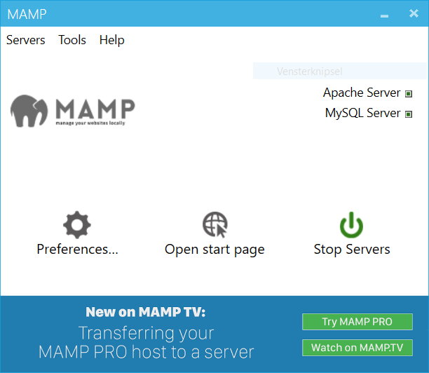
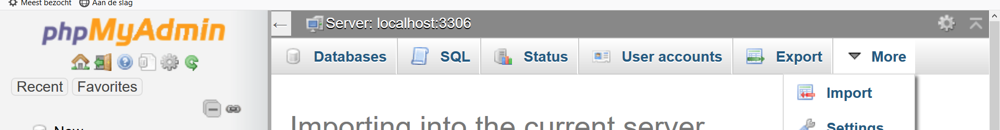
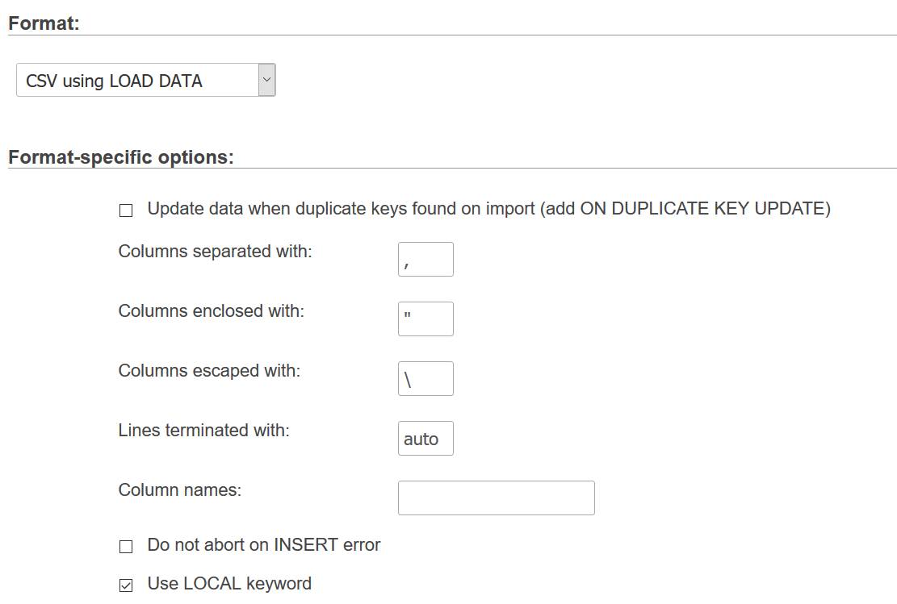

JDBC
In dit labo zullen we een applicatie ontwikkelen die analoog is
aan diegene die we hebben gemaakt
tijdens het labo van ADO.NET, maar nu zullen we een andere
technologie, JDBC, en een andere databank, mysql, gebruiken.
Opzetten van de databank
-
Start het programma MAMP
( ) en zorg
ervoor dat de beide servers (Apache en MySQL) draaien.
) en zorg
ervoor dat de beide servers (Apache en MySQL) draaien.

Download het bestand databank.zip en
unzip het bestand. Dit bestand bevat een script om de databank aan te maken
en meerdere txt-bestanden om de tabellen in de databank op te vullen.
- Klik op "Open start page" in MAMP en selecteer het menu Tools --> phpMyAdmin.
- Ga naar het tabblad "Import", via "More", en
importeer het bestand
create_classicmodels.sql uit de map scripts.

Het script maakt 7 tabellen aan: customers,
employees, offices, orderdetails,
orders, payments en products.
- Selecteer links de tabel
customers en ga opnieuw naar
het tabblad "Import". Browse op je computer naar het bestand Customers.txt
in de map datafiles. Kies als formaat "CSV using LOAD DATA", verander
de ";" in een "," bij de keuze "Columns separated with:" en vink
"Use LOCAL keyword" aan. Druk op "Go" om het bestand op te laden.
De tabel "customers" is nu opgevuld.

- Doe hetzelfde voor de andere tabellen.
Het gegevensbanksysteem is nu opgestart en opgevuld met gegevens.
Opdracht
Hier vind je een console-applicatie die je
nog moet aanvullen zodat volgende acties uitgevoerd worden op de opgezette databank:
- Een lijst van alle producten tonen.
- Een lijst van alle orders tonen van een bepaalde klant.
- Een nieuw order inclusief orderdetails toevoegen aan de databank. Zorg ervoor dat wanneer
het toevoegen van het order met orderdetails mislukt, de databank terugkeert naar de toestand
voor het uitvoeren van de query.
- Een customer aanpassen
Daarvoor heb je volgende queries nodig:
- select * from Products
- select * from Orders where customerNumber=...
- insert into Orders (orderNumber,orderDate,requiredDate,shippedDate,status,comments,customerNumber) values (...,...,...,...,...,...,...)
- insert into OrderDetails (orderNumber,productCode,quantityOrdered,priceEach,orderLineNumber) values (...,...,...,...,...)
- update Customers set customerName=...,contactLastName=...,contactFirstName=...,phone=...,addressLine1=...,addressLine2=...,city=...,state=...,postalCode=...,country=...,salesRepEmployeeNumber=...,creditLimit=... where customerNumber=...
Om de connectie met de databank te kunnen realiseren, heb je
een driver nodig; deze kan je hier vinden. Voeg de jar aan je project toe.
De applicatie voldoet aan volgende eisen:
- Geschreven in Java
- Alle nodige query's komen uit een configuratiebestand. Je kan dan uit zo'n properties bestand lezen
met hulp van een ResourceBundle.
- Zorg dat je applicatie beschermd is tegen SQL-injectie.
- Zorg voor een goede foutafhandeling.
- Zorg dat je connectie steeds correct wordt afgesloten.
Tips
- Bekijk het installatiescript of de phpMyAdmin-webapp om de naam van de databank en de gebruiker te kennen.
- "No suitable driver found"? Vergeet de juiste driver niet toe te voegen.
- Krijg je een fout ivm de tijdszone? Voeg "?serverTimezone=UTC" toe aan je JDBC-url.
- Vergelijk de constructor van de klasse
java.sql.Date met de methode getTime() van java.util.Date. Gebruik de klassen DateFormat en SimpleDateFormat indien nodig.